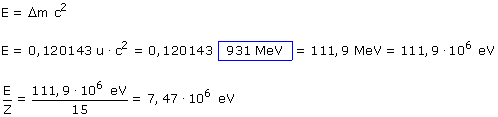

Masa protones:
7·1,007276 u
= 7,050932 u
Masa neutrones:
(15 - 7)·1,008665 u
= 8,069320 u
Masa total:
= 15,120252 u
Masa del núcleido:
= 15,000109 u
Defecto de masa:
= 0,120143 u
El núclido tiene 0,120143 u menos de masa que el conjunto de sus componentes. Esta masa que falta se ha convertido en energía que se libera en el momento de la formación (Energía de enlace)
